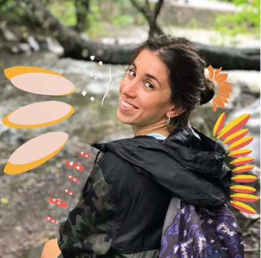
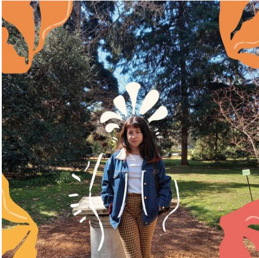
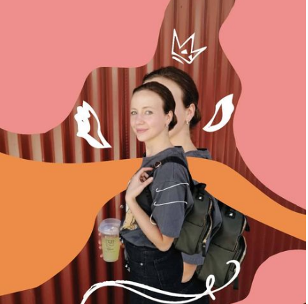
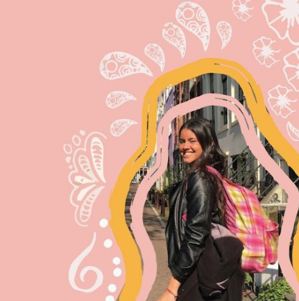

Gugui

Hola! he aquí Gugui. Soy licenciada en Turismo y Hotelería y desde que me recibí, trabajo de ello. En la pandemia, con un poco mas de tiempo, empecé a administrar de manera desinteresada las redes de los negocios familiares y descubrí un mundo que me súper atrapó, por lo que decidí estudiar community manager y publicidad.
Agustina
Hola a todos! Aquí Agustina o mejor conocida como Soli. Estudié Licenciatura en Hotelería y Turismo, luego realicé un posgrado en patrimonio cultural y turismo sostenible, que es lo que me apasiona.
Carla
Hola a todes soy Carla. Estudié comunicación social y estoy transitando el largo camino de la tesis. También me forme en redes y diseñño. Hoy trabajo en comunicación política y soy CM freelance.
Fiorela
Buenas! Soy Fiorela, pero suelen decirme Fiore. Soy lic. en Comunicación Social y realicé un posgrado en Marketing Digital y cursos de Copywriting. Mi trayectoria laboral estuvo orientada en Ads y actualmente implemento campañas en Social y Google para Mercado Libre.
Vanina
Hola! Mi nombre es Vanina. Tengo estudios en diseño y community management. Soy emprendedora, tuve mi propia marca de ropa en la cual busqué crear algo diferente y original, al igual que con colmena.